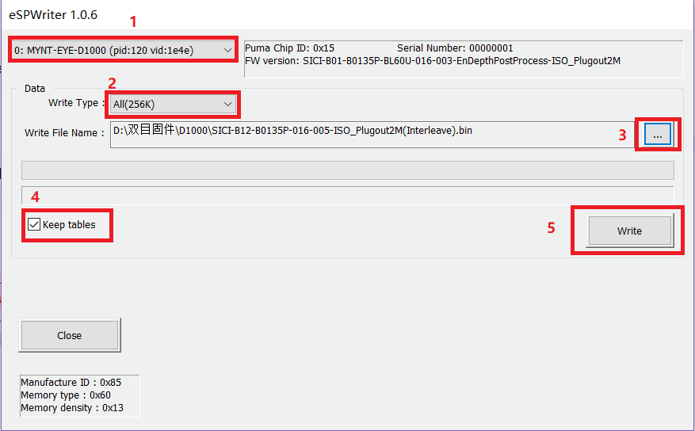

升级主处理芯片固件¶
注解
此工具不支持内测版设备升级
获取主芯片固件¶
Latest firmware: MYNTEYE-D-1.0.6.bin Google Drive, Baidu Pan
获取升级工具¶
Latest tool: eSPWriter_1.0.6.zip Google Drive, Baidu Pan
升级固件¶
注解
请严格按照步骤升级固件.(否则可能会丢失相机标定参数)
1, 选择相机设备.
2, 选择数据类型(256KB).
3, 选择芯片固件.
4, 选择 Keep tables (保留相机标定参数).
5, 点击 Write.
参考图示使用工具:
